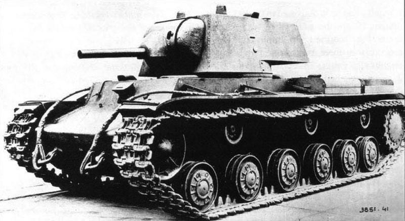

The KV-1 (Kliment Voroshilov 1) was a Soviet heavy tank introduced in 1939 and named after the Soviet defense commissar Kliment Voroshilov. It was developed by the Kirov Plant in Leningrad to provide the Red Army with a heavily armored breakthrough vehicle capable of defeating enemy fortifications and anti-tank weapons. However, the KV-1’s heavy armor came at a cost. Its 600 hp diesel engine struggled with the tank’s weight, resulting in poor mobility, slow speed (around 35 km/h), and frequent mechanical failures. Visibility and crew comfort were also limited. Despite these flaws, the KV-1 dominated the battlefield in 1941–42 until improved German weapons appeared. It was gradually replaced by the more balanced IS series, but it proved crucial in buying time for the Soviet Union to reorganize its defenses.

- Characteristics:
- Type: Heavy tank
- Weight: 45 tons
- Crew: 5
- Armament: 76.2mm F-32 gun/ 76.2 mm L-11/ 76.2 mm ZiS-5; 3 x 7.62mm DT machine guns
- Speed: 35 km/h